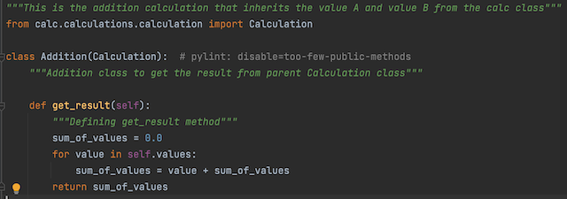
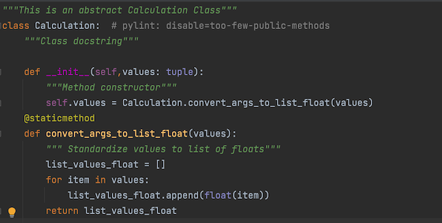
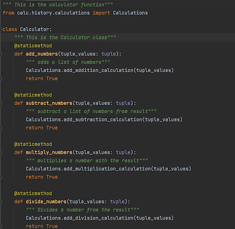

Seperation of concerns
Separation of concerns is a software architecture design pattern/principle for separating an application into distinct sections, so each section addresses a separate concern. At its essence, Separation of concerns is about order. The overall goal of separation of concerns is to establish a well-organized system where each part fulfills a meaningful and intuitive role while maximizing its ability to adapt to change.
The Calculator program is implement in such a way that it brings Seperation of Concerns design pattern in play by separating different functions and other utilities.
- The Addition class here only implements the function of performing addition of list of floats. which has no effects of any modification in Division or Subtraction classes 
- Moreover, In calculations class the function of adding any calculation to history is implemented and to obtain a certain history we can just refer to calculations class here 
- In calculator class we can see that the function is created to perform the addition of list of numbers by implementing Addition Method. Here By separating similar functions helps keep related code and functions together. 
Some Advantages of implementing Seperation of concerns
- Lack of duplication and singularity of purpose of the individual components render the overall system easier to maintain.
- The system becomes more stable as a byproduct of the increased maintainability.
- The strategies required to ensure that each component only concerns itself with a single set of cohesive responsibilities often result in natural extensibility points.
- The decoupling which results from requiring components to focus on a single purpose leads to components which are more easily reused in other systems, or different contexts within the same system.
- The increase in maintainability and extensibility can have a major impact on the marketability and adoption rate of the system.

Separation of Concerns is a design principle for separating a computer program into distinct sections such that each section addresses a separate concern.
Cohesion is the measure of how related a group of things are. In computer science, it's how strong the relationship is between the methods and data of a class.
Coupling is basically a measure of dependence between two or more classes, modules, or components. Tight coupling is bad, and loose coupling is good.